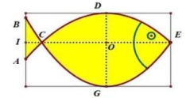

ĐỀ THI TOÁN - ĐỀ SỐ 23 HOT
Phần I: Trắc Nghiệm Nhiều Lựa Chọn
Tóm tắt kiến thức: Nguyên hàm
Nguyên hàm của \( f(x) = a^x \) là \( \int a^x \, dx = \frac{a^x}{\ln a} + C \), với \( a > 0 \), \( a \neq 1 \).
Câu 1:
Nguyên hàm của hàm số \( f(x) = 2^x \) là
Chọn đáp án:
Lời giải:
Nguyên hàm của \( 2^x \) là \( \int 2^x \, dx = \frac{2^x}{\ln 2} + C \).
Đáp án: B.
Tóm tắt kiến thức: Thể tích khối tròn xoay
Thể tích khối tròn xoay quanh trục \( Ox \): \( V = \pi \int_a^b y^2 \, dx \), với \( y \) là hàm số xác định miền quay.
Câu 2:
Gọi \( D \) là hình phẳng giới hạn bởi các đường \( y = x^3 \), \( y = 0 \), \( x = 0 \) và \( x = 1 \). Thể tích của khối tròn xoay tạo thành khi quay \( D \) quanh trục \( Ox \) bằng
Chọn đáp án:
Lời giải:
Thể tích: \( V = \pi \int_0^1 (x^3)^2 \, dx = \pi \int_0^1 x^6 \, dx \).
Đáp án: D.
Tóm tắt kiến thức: Trung vị
Trung vị của mẫu số liệu ghép nhóm được xác định dựa trên tổng số phần tử và khoảng chứa số thứ tự trung bình.
Câu 3:
Thống kê điểm thi đánh giá năng lực của một trường THPT qua thang điểm 100 được cho ở bảng sau:
| Điểm | (0; 20) | [20; 40) | [40; 60) | [60; 80) | [80; 100) |
|---|---|---|---|---|---|
| Số học sinh | 25 | 35 | 37 | 15 | 8 |
Trung vị của mẫu số liệu ghép nhóm thuộc khoảng nào sau đây?
Chọn đáp án:
Lời giải:
Tổng số học sinh: \( n = 25 + 35 + 37 + 15 + 8 = 120 \) (chẵn).
Trung vị: \( M_e = \frac{x_{60} + x_{61}}{2} \). Ta có: \( x_{60} \in [20; 40) \), \( x_{61} \in [40; 60) \).
Vậy trung vị thuộc khoảng [40; 60).
Đáp án: C.
Tóm tắt kiến thức: Phương trình đường thẳng
Phương trình đường thẳng qua hai điểm \( M(x_1; y_1; z_1) \), \( N(x_2; y_2; z_2) \): \( \frac{x - x_1}{x_2 - x_1} = \frac{y - y_1}{y_2 - y_1} = \frac{z - z_1}{z_2 - z_1} \).
Câu 4:
Trong không gian \( Oxyz \), phương trình của đường thẳng đi qua \( M(1; 2; 1) \) và \( N(3; 1; -2) \) là
Chọn đáp án:
Lời giải:
Vector chỉ phương: \( \overrightarrow{MN} = (3-1; 1-2; -2-1) = (2; -1; -3) \).
Phương trình đường thẳng qua \( M(1; 2; 1) \): \( \frac{x-1}{2} = \frac{y-2}{-1} = \frac{z-1}{-3} \).
Đáp án: B.
Tóm tắt kiến thức: Tiệm cận đứng
Đường thẳng \( x = a \) là tiệm cận đứng nếu \( \lim_{x \to a^-} f(x) = \pm \infty \) hoặc \( \lim_{x \to a^+} f(x) = \pm \infty \).
Câu 5:
Trong các hàm số sau đây, hàm số nào có đồ thị nhận đường thẳng \( x = 1 \) làm đường tiệm cận đứng?
Chọn đáp án:
Lời giải:
- Đáp án A: \( y = \frac{2x-1}{x-1} \), mẫu số bằng 0 khi \( x = 1 \), \( \lim_{x \to 1^-} y = -\infty \), \( \lim_{x \to 1^+} y = +\infty \). Có tiệm cận đứng \( x = 1 \).
- Đáp án B: Mẫu số bằng 0 khi \( x = \frac{3}{2} \), không có tiệm cận tại \( x = 1 \).
- Đáp án C: Không có mẫu số, không có tiệm cận đứng.
- Đáp án D: Mẫu số \( x^2 + x + 1 > 0 \), không có tiệm cận đứng.
Đáp án: A.
Tóm tắt kiến thức: Phương trình logarit
Phương trình \( \log_a b = c \): \( b = a^c \), với điều kiện \( b > 0 \).
Câu 6:
Tập nghiệm của phương trình \( \log_3 (18 - x^2) = 2 \) là
Chọn đáp án:
Lời giải:
Điều kiện: \( 18 - x^2 > 0 \Rightarrow -3\sqrt{2} < x < 3\sqrt{2} \).
\( \log_3 (18 - x^2) = 2 \Rightarrow 18 - x^2 = 3^2 = 9 \Rightarrow x^2 = 9 \Rightarrow x = \pm 3 \).
Cả hai nghiệm đều thỏa mãn điều kiện.
Đáp án: C.
Tóm tắt kiến thức: Vector pháp tuyến
Vector pháp tuyến của mặt phẳng \( ax + by + cz + d = 0 \) là \( \vec{n} = (a; b; c) \).
Câu 7:
Trong không gian \( Oxyz \), cho mặt phẳng \( (P): x + 2z - 3 = 0 \). Vector nào dưới đây là một vector pháp tuyến của mặt phẳng \( (P) \)?
Chọn đáp án:
Lời giải:
Mặt phẳng \( x + 2z - 3 = 0 \) có vector pháp tuyến \( \vec{n} = (1; 0; 2) \).
Đáp án: C.
Tóm tắt kiến thức: Hình học không gian
Mối quan hệ vuông góc giữa đường thẳng và mặt phẳng trong khối chóp.
Câu 8:
Cho hình chóp \( S.ABC \) có đáy \( ABC \) là tam giác vuông tại \( B \) và \( SA \perp (ABC) \). Khẳng định nào sau đây đúng?
Chọn đáp án:
Lời giải:
Vì \( SA \perp (ABC) \), \( ABC \) vuông tại \( B \), nên \( BC \perp SA \), \( BC \perp AB \).
Mặt phẳng \( (SAB) \) chứa \( SA \), \( AB \), nên \( BC \perp (SAB) \).
Đáp án: D.
Tóm tắt kiến thức: Bất phương trình logarit
Bất phương trình logarit \( \log_a f(x) + \log_b g(x) < 0 \): Xét điều kiện, chuyển về dạng \( f(x) < g(x) \) nếu \( a, b \) có cùng chiều.
Câu 9:
Tập nghiệm của bất phương trình \( \log_2 (x^2 - 3x + 2) + \log_{\frac{1}{2}} (9 - x^2) < 0 \) chứa bao nhiêu số nguyên?
Chọn đáp án:
Lời giải:
Điều kiện: \( x^2 - 3x + 2 > 0 \), \( 9 - x^2 > 0 \).
\( \log_{\frac{1}{2}} (9 - x^2) = -\log_2 (9 - x^2) \), nên bất phương trình tương đương: \( \log_2 (x^2 - 3x + 2) - \log_2 (9 - x^2) < 0 \).
\( \Rightarrow \log_2 \frac{x^2 - 3x + 2}{9 - x^2} < 0 \Rightarrow \frac{x^2 - 3x + 2}{9 - x^2} < 1 \).
Giải: \( x^2 - 3x + 2 < 9 - x^2 \Rightarrow 2x^2 - 3x - 7 < 0 \).
Kết hợp điều kiện: \( -3 < x < 3 \), \( x \neq 1 \), \( x \neq 2 \), nghiệm là \( \frac{3 - \sqrt{65}}{4} < x < 1 \).
Số nguyên: \( -1, 0 \). Vậy có 2 số nguyên.
Đáp án: B.
Tóm tắt kiến thức: Cấp số cộng
Công sai của cấp số cộng: \( d = \frac{u_m - u_n}{m - n} \).
Câu 10:
Cho cấp số cộng \( (u_n) \) có \( u_2 = 2 \), \( u_5 = 11 \). Công sai \( d \) của cấp số cộng là
Chọn đáp án:
Lời giải:
Công sai: \( d = \frac{u_5 - u_2}{5 - 2} = \frac{11 - 2}{3} = 3 \).
Đáp án: C.
Tóm tắt kiến thức: Tổng vector
Tổng vector: \( \vec{u} + k\vec{v} = (u_1 + kv_1; u_2 + kv_2; u_3 + kv_3) \).
Câu 11:
Trong không gian \( Oxyz \), cho hai vector \( \vec{u} = (1; -4; 0) \) và \( \vec{v} = (-1; -2; 1) \). Vector \( \vec{u} + 3\vec{v} \) có tọa độ là
Chọn đáp án:
Lời giải:
\( \vec{u} + 3\vec{v} = (1 + 3(-1); -4 + 3(-2); 0 + 3(1)) = (-2; -10; 3) \).
Đáp án: A.
Tóm tắt kiến thức: Cực trị hàm số
Số điểm cực trị là số nghiệm \( f'(x) = 0 \) có \( f''(x) \neq 0 \) hoặc \( f'(x) \) đổi dấu.
Câu 12:
Cho hàm số \( f(x) \) có đạo hàm \( f'(x) = x^{21124} (x-1)(x-2)^2 (x-3) \), \( \forall x \in \mathbb{R} \). Số điểm cực trị của hàm số đã cho là
Chọn đáp án:
Lời giải:
\( f'(x) = x^{21124} (x-1)(x-2)^2 (x-3) = 0 \Rightarrow x = 0, 1, 2, 3 \).
- Tại \( x = 0 \): \( f'(x) \) không đổi dấu (do lũy thừa chẵn), không phải cực trị.
- Tại \( x = 1 \): \( f'(x) \) đổi dấu, là cực trị.
- Tại \( x = 2 \): \( f'(x) \) không đổi dấu (do lũy thừa chẵn), không phải cực trị.
- Tại \( x = 3 \): \( f'(x) \) đổi dấu, là cực trị.
Số điểm cực trị: 2.
Đáp án: B.
Phần II: Trắc Nghiệm Đúng/Sai
Tóm tắt kiến thức: Hàm số mũ
Hàm \( f(x) = e^x + x \): Đạo hàm, giá trị tại điểm, và tính đơn điệu.
Câu 13:
Cho hàm số \( f(x) = e^x + x \). Xét các phát biểu sau:
Chọn đáp án cho từng phát biểu:
a)
b)
c)
d)
Lời giải:
a) Đúng. \( f(0) = e^0 + 0 = 1 \), \( f(\ln 2) = e^{\ln 2} + \ln 2 = 2 + \ln 2 \).
b) Đúng. \( f'(x) = e^x + 1 \).
c) Sai. \( f'(x) = e^x + 1 > 0 \), vô nghiệm trên \( [0; 1] \).
d) Đúng. \( f'(x) > 0 \), hàm đồng biến, giá trị lớn nhất tại \( x = \ln 2 \): \( f(\ln 2) = 2 + \ln 2 \).
Đáp án: a) Đúng, b) Đúng, c) Sai, d) Đúng.
Tóm tắt kiến thức: Chuyển động thẳng đều
Quãng đường: \( s = \int v(t) \, dt \). Vận tốc bằng 0 khi xe dừng.
Câu 14:
Để đảm bảo an toàn khi lưu thông trên đường, các xe ô tô khi dừng đèn đỏ phải cách nhau tối thiểu 1 m. Ô tô A đang chạy với vận tốc 16 m/s bỗng gặp ô tô B đang dừng đèn đỏ phía trước. Xét các phát biểu sau:
Chọn đáp án cho từng phát biểu:
a)
b)
c)
d)
Lời giải:
a) Đúng. Xe dừng khi vận tốc \( v = 0 \).
b) Sai. \( v(t) = 16 - 4t = 0 \Rightarrow t = 4 \), không phải \( t = 5 \).
c) Sai. Quãng đường: \( s = \int_0^4 (16 - 4t) \, dt \), không phải từ 0 đến 1.
d) Sai. Quãng đường: \( s = \int_0^4 (16 - 4t) \, dt = 32 \, \text{m} \). Cộng khoảng cách an toàn 1 m, ô tô A cần hãm phanh khi cách 33 m, không phải 30 m.
Đáp án: a) Đúng, b) Sai, c) Sai, d) Sai.
Tóm tắt kiến thức: Xác suất
Xác suất toàn phần: \( P(A) = P(B) \cdot P(A|B) + P(\bar{B}) \cdot P(A|\bar{B}) \).
Câu 15:
Một chiếc hộp có 80 viên bi, trong đó có 50 viên bi màu đỏ và 30 viên bi màu vàng; các viên bi có kích thước và khối lượng như nhau. Sau khi kiểm tra, người ta thấy có 60% số viên bi màu đỏ đánh số và 50% số viên bi màu vàng có đánh số, những viên bi còn lại không đánh số. Lấy ngẫu nhiên một viên bi trong hộp. Gọi \( A \) là biến cố “Viên bi được lấy ra có đánh số”, \( B \) là biến cố “Viên bi được lấy ra có màu đỏ”. Xét các phát biểu sau:
Chọn đáp án cho từng phát biểu:
a)
b)
c)
d)
Lời giải:
a) Đúng. Số viên bi đỏ đánh số: \( 0.6 \cdot 50 = 30 \).
b) Sai. \( P(B) = \frac{50}{80} = \frac{5}{8} \neq \frac{3}{5} \).
c) Đúng. Xác suất viên bi đỏ có đánh số là \( P(A|B) \).
d) Sai. Xác suất viên bi có đánh số là \( P(A) = \frac{5}{8} \cdot 0.6 + \frac{3}{8} \cdot 0.5 = \frac{9}{16} \), không phải \( P(A|B) \).
Đáp án: a) Đúng, b) Sai, c) Đúng, d) Sai.
Tóm tắt kiến thức: Hình học không gian và khoảng cách
Phương trình mặt cầu, khoảng cách từ điểm đến đường thẳng, và giao điểm đường thẳng với mặt cầu.
Câu 16:
Hệ thống phòng không “Vòm sắt” là một trong những hệ thống đánh chặn tên lửa từ xa rất nổi tiếng của Israel. Để “Vòm sắt” hoạt động được chính xác, người ta trang bị một Radar có khả năng phát hiện tên lửa với bán kính 417 km. Trong hệ trục tọa độ \( Oxyz \), hệ thống “Vòm sắt” đang ở vị trí \( O(0; 0; 0) \) và một quả tên lửa đang ở vị trí \( A(688; 185; -8) \) được phóng lên và bay theo một quỹ đạo là đường thẳng có vector chỉ phương là \( \vec{u} = (-91; -75; 0) \). Xét các phát biểu sau:
Chọn đáp án cho từng phát biểu:
a)
b)
c)
d)
Lời giải:
a) Sai. Phương trình mặt cầu: \( x^2 + y^2 + z^2 = 417^2 \), không phải \( 417 \).
b) Sai. \( 688^2 + 185^2 + (-8)^2 = 507633 > 417^2 \), điểm \( A \) nằm ngoài mặt cầu.
c) Sai. Quỹ đạo tên lửa: \( x = 688 - 91t \), \( y = 185 - 75t \), \( z = -8 \). Giao với mặt cầu \( x^2 + y^2 + z^2 = 417^2 \): \( t = 8 \) (\( B(-40; -415; -8) \)), không phải \( t = 3 \) (\( B(415; -40; -8) \)).
d) Sai. Khoảng cách gần nhất: Tại \( t = \frac{11}{2} \), \( H\left(\frac{375}{2}; -\frac{455}{2}; -8\right) \), \( |\overrightarrow{OH}| \approx 295 \, \text{km} \neq 190 \, \text{km} \).
Đáp án: a) Sai, b) Sai, c) Sai, d) Sai.
Phần III: Trắc Nghiệm Trả Lời Ngắn
Tóm tắt kiến thức: Khoảng cách trong không gian
Khoảng cách giữa hai đường thẳng chéo nhau được tính qua hình chiếu và trung bình tam giác.
Câu 17:
Cho hình hộp chữ nhật \( ABCD.A'B'C'D' \) có đáy \( ABCD \) là hình vuông cạnh \( \sqrt{2} \), \( AA' = 2 \). Tính khoảng cách giữa hai đường thẳng \( BD \) và \( CD' \).
Nhập đáp án:
Lời giải:
Gọi \( I \) là điểm đối xứng của \( A \) qua \( D \), \( BCID \) là hình bình hành, nên \( BD \parallel CI \).
Khoảng cách: \( d(BD, CD') = d(D, (CD'I)) \). Kéo \( DE \perp CI \), \( DK \perp D'E \), thì \( DK = d(D, (CD'I)) \).
Trong \( \triangle IAC \), \( DE \parallel AC \), \( DE = \frac{1}{2} AC = 1 \). Trong \( \triangle D'DE \), \( DK = \frac{D'D \cdot DE}{\sqrt{D'D^2 + DE^2}} = \frac{2 \cdot 1}{\sqrt{2^2 + 1^2}} = \frac{2\sqrt{5}}{5} \approx 0.89 \).
Đáp án: 0.89.
Tóm tắt kiến thức: Đường đi ngắn nhất
Tìm đường đi ngắn nhất qua các cạnh với độ dài cho trước.
Câu 18:
Có sáu địa điểm A, B, C, D, E, T. Một số địa điểm có đường đi tới nhau mô tả bằng các cạnh với độ dài quãng đường tính theo kilomet cho bởi số gắn với cạnh đó như hình vẽ.

Một người đưa thư xuất phát từ bưu điện ở vị trí A đến T. Cần đi qua tất cả các đường (mỗi đường đi qua nhiều nhất một lần). Tổng số kilomet mà người đưa thư phải đi ngắn nhất bằng bao nhiêu?
Nhập đáp án:
Lời giải:
Các đường từ A đến T:
- ABDT: \( 4 + 7 + 3 = 14 \).
- ABDET: \( 4 + 7 + 4 + 5 = 20 \).
- ABDEET: \( 4 + 7 + 6 + 12 + 5 = 34 \).
- ACDT: \( 2 + 6 + 3 = 11 \).
- ACDET: \( 2 + 6 + 4 + 5 = 17 \).
- ACET: \( 2 + 12 + 5 = 19 \).
- ACEDT: \( 2 + 12 + 4 + 3 = 21 \).
Đường ngắn nhất: ACDT, tổng quãng đường: 11 km.
Đáp án: 11.
Tóm tắt kiến thức: Phương trình mặt cầu
Phương trình mặt cầu và khoảng cách từ điểm đến các mặt phẳng.
Câu 19:
Bạn Bình đố bạn Nam tìm đường kính của quả bóng rổ, biết rằng nếu đặt quả bóng ở một góc căn phòng hình hộp chữ nhật, sao cho quả bóng chạm với hai bức tường và nền nhà của căn phòng đó thì có một điểm \( M \) trên quả bóng với khoảng cách đến hai bức tường và nền nhà lần lượt là 17 cm, 18 cm, 21 cm. Bán kính quả bóng bằng bao nhiêu biết loại bóng tiêu chuẩn có đường kính nằm trong khoảng từ 23 cm đến 24,5 cm?
Nhập đáp án:
Lời giải:
Quả bóng tiếp xúc các mặt phẳng \( x = 0 \), \( y = 0 \), \( z = 0 \), tâm tại \( (R; R; R) \).
Phương trình mặt cầu: \( (x - R)^2 + (y - R)^2 + (z - R)^2 = R^2 \).
Điểm \( M(17; 18; 21) \) thuộc mặt cầu: \( (17 - R)^2 + (18 - R)^2 + (21 - R)^2 = R^2 \).
Giải: \( 2R^2 - 112R + 1054 = 0 \Rightarrow R = 28 \pm \sqrt{257} \).
Với \( R = 28 - \sqrt{257} \approx 12 \, \text{cm} \), đường kính \( \approx 24 \, \text{cm} \), thuộc [23; 24.5].
Đáp án: 12.
Tóm tắt kiến thức: Tích phân xác định
Diện tích hình phẳng giới hạn bởi hai đồ thị: \( S = \int_a^b |f(x) - g(x)| \, dx \).
Câu 20:
Trên cửa sổ có dạng hình chữ nhật, họa sĩ thiết kế logo hình con cá cho một doanh nghiệp kinh doanh hải sản. Logo là hình phẳng giới hạn bởi hai parabol \( y = f(x) \), \( y = g(x) \) với các kích thước \( IC = 1 \, \text{dm} \), \( CO = OE = 4 \, \text{dm} \), \( OD = 2 \, \text{dm} \), \( OG = 3 \, \text{dm} \) (như hình vẽ dưới đây).

Logo chỉ cho phép 50% lượng ánh sáng đi qua. Lượng ánh sáng đi qua toàn bộ cửa sổ sau khi làm logo sẽ giảm bao nhiêu phần trăm (làm tròn kết quả đến hàng phần mười)?
Nhập đáp án:
Lời giải:
Parabol \( f(x) \): \( f(x) = ax^2 + bx + 2 \), qua \( C(-4; 0) \), \( E(4; 0) \): \( f(x) = -\frac{1}{8} x^2 + 2 \).
Parabol \( g(x) \): \( g(x) = mx^2 + nx - 3 \), qua \( C(-4; 0) \), \( E(4; 0) \): \( g(x) = \frac{3}{16} x^2 - 3 \).
Diện tích logo: \( S_1 = \int_{-4}^4 \left| -\frac{1}{8} x^2 + 2 - \left( \frac{3}{16} x^2 - 3 \right) \right| \, dx = \frac{1345}{48} \, \text{dm}^2 \).
Diện tích cửa sổ: \( (1 + 4 + 4) \cdot (2 + 3) = 45 \, \text{dm}^2 \).
Ánh sáng giảm: \( \frac{1345}{48} \cdot \frac{1}{2} \div 45 \cdot 100\% \approx 31.1\% \).
Đáp án: 31.1.
Tóm tắt kiến thức: Tối ưu hóa thời gian
Tối ưu hóa thời gian di chuyển qua bất đẳng thức và cực trị hàm số.
Câu 21:
Một nhà địa chất học đang ở tại điểm \( A \) trên sa mạc. Anh ta muốn đến điểm \( B \) và cách \( A \) một đoạn là 70 km. Trong sa mạc thì xe anh ta chỉ có thể di chuyển với vận tốc là 30 km/h. Nhà địa chất phải đến được điểm \( B \) sau 2 giờ. Vì vậy, nếu anh ta đi từ \( A \) đến \( B \) sẽ không thể đến đúng giờ được. May mắn thay, có một con đường nhựa song song với đường nối \( A \) và \( B \) và cách \( AB \) một đoạn 10 km. Trên đường nhựa đó thì xe nhà địa chất này có thể di chuyển với vận tốc 50 km/h. Thời gian ngắn nhất để nhà địa chất di chuyển từ \( A \) đến \( B \) là bao nhiêu phút?
Nhập đáp án:
Lời giải:
Gọi \( HC = x \), \( KD = y \), \( x + y < 70 \). Quãng đường trên sa mạc: \( \sqrt{100 + x^2} + \sqrt{100 + y^2} \).
Thời gian trên sa mạc: \( \frac{\sqrt{100 + x^2} + \sqrt{100 + y^2}}{30} \).
Quãng đường trên đường nhựa: \( 70 - (x + y) \). Thời gian: \( \frac{70 - (x + y)}{50} \).
Tổng thời gian: \( T = \frac{\sqrt{100 + x^2} + \sqrt{100 + y^2}}{30} + \frac{70 - (x + y)}{50} \).
Đặt \( t = x + y \), \( T \geq \frac{\sqrt{400 + t^2}}{30} + \frac{70 - t}{50} \). Hàm \( f(t) \) đạt min tại \( t = 15 \), \( T = \frac{58}{30} \, \text{h} = 116 \, \text{phút} \).
Đáp án: 116.
Tóm tắt kiến thức: Xác suất
Xác suất của sự kiện độc lập: \( P(E) = P(M) \cdot P(N) \). Xác suất toàn phần: \( P(M) = P(A) \cdot P(M|A) + P(\bar{A}) \cdot P(M|\bar{A}) \).
Câu 22:
Hình dạng hạt của đậu Hà Lan có hai kiểu hình: hạt trơn và hạt nhăn, có hai gene ứng với hai kiểu hình này là gene trội \( B \) và gene lặn \( b \). Khi cho lai hai cây đậu Hà Lan, cây con lấy ngẫu nhiên một cách độc lập một gene từ cây bố và một gene từ cây mẹ để hình thành một cặp gene. Giả sử cây bố và cây mẹ được chọn ngẫu nhiên từ một quần thể các cây đậu Hà Lan, ở đó tỉ lệ cây mang kiểu gene bb, Bb tương ứng là 40% và 60%. Tính xác suất để cây con có kiểu gene bb.
Nhập đáp án:
Lời giải:
Gọi \( A \): Cây bố có kiểu gene bb; \( M \): Cây con lấy gene b từ bố; \( N \): Cây con lấy gene b từ mẹ; \( E \): Cây con có kiểu gene bb.
\( P(E) = P(M) \cdot P(N) \).
\( P(M) = P(A) \cdot P(M|A) + P(\bar{A}) \cdot P(M|\bar{A}) = 0.4 \cdot 1 + 0.6 \cdot \frac{1}{2} = 0.7 \).
Tương tự, \( P(N) = 0.7 \).
\( P(E) = 0.7 \cdot 0.7 = 0.49 \).
Đáp án: 0.49.